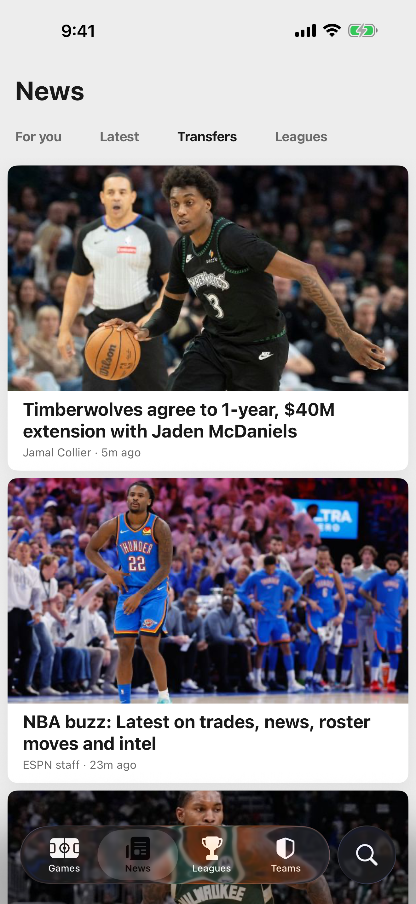

StatSide
News
The stories,
without the noise.
without the noise.
- For you — the teams you follow, and only them
- Latest from every league, in one feed
- Transfers — just the roster moves, nothing else
- Read in the app, with a News tab on every team, game and player page
